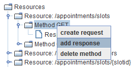
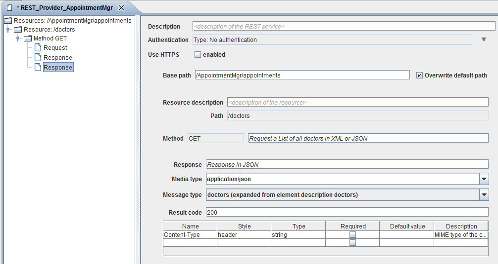

Response Configuration

Topic content
For each method user can define corresponding response object containing information
about method request.
1.Right click on Method object and select add response option in order to create new request object

Figure 45 – REST Service Provider – Add method response
2. Click on the created Response object to open configuration panel for it.

Figure 46 – REST Service Provider –Method Response Configuration
There are five configuration fields related to the Response object.
•Response - The description value of the response object.
•Media Type - defining the format of the method response.
•Message Type - defining the internal Message Type to use for the Response
•Result Code - see the definition at chapter 2.8 HTTP Code.
•Method parameters - defining the request parameters. Headers, query parameters, etc.
Note: For understanding the Request Styles have a look at chapter 1.1 Resource Parameters